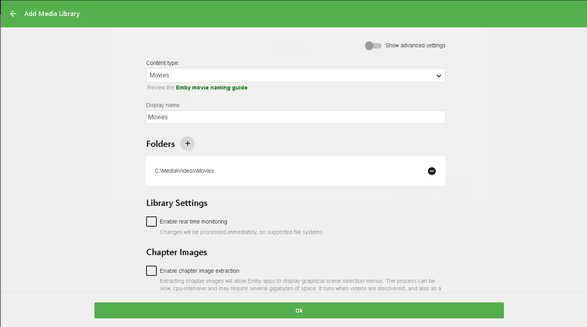
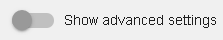

Library Setup
Setting up the library is handled within the startup wizard and also within the server dashboard, located by clicking on the Library tab.
Prepare Your Media
It's important to first prepare your media. See other sections of the documentation for more information:
Library Setup Page
The configuration will display the media libraries you've configured and allow you to add, remove, rename or change the paths they're mapped to.
A media library is a grouping of one or more physical folders on your file system.
To get started, click the button to add a media library.

Clicking the "Add Media Library" button will open a dialog to add a library. You'll have to specify a content type, enter a display name, and choose a path to the media.
Content Type
Choosing the right content type is important. See the above guide on media preparation for best practices for Movie, TV and Music sections.
Use the unset content type if you'd like to add a media folder that mixes different content. Please note that support for mixed content is limited. Initially you'll only be able to add one media path when setting up the library, but additional paths can be added after setting it up.

Library Paths
Each media folder can have one or more physical library paths. When you supply more than one media path, the contents of each will be merged together into one virtual display.

To add a library path, click the + button. A popup will be displayed allowing you to browse to the location in a visual manner.
Important
If you are going to use one of the HTPC apps (Classic, Theater, or Kodi) it is very important to use the Optional Network Path feature to translate the server's local paths to network ones or define your media locations with network UNC paths that those machines can see.
Warning
If you have paths with more than 256 chars on Windows you may have a problem. Please refer to https://docs.microsoft.com/en-us/windows/win32/fileio/maximum-file-path-limitation for help with this.
Tip
On some networks the visual browser may fail to display network devices. If this occurs you can still complete the dialog by typing in the path manually and clicking OK.

Optional Network Paths
By allowing Emby apps direct access to media folders on the server, they may be able to play them directly over the network and avoid using server resources to stream and transcode. Network Paths can help achieve this by mapping a path on the server to a network path that can be accessed by other devices.
To learn more, see Optional Network Paths.
Enable real-time monitoring
To have Emby monitor changes to files and addition of content, real-time monitoring should be enabled.
Important
This option is only available on supported file systems. You should restart your Emby Server after changing this option
Subtitles
If required, you can select the subtitle language that Emby server will attempt to download.

Advanced Settings
If you enable Advanced Settings, you will have additional settings per library displayed.



Advanced Settings include options such as:
- Prefer embedded titles over filenames
- Extract chapter images during the library scan
- Enable Open Subtitles subtitles